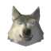
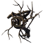
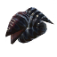
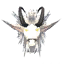
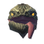

Trofei
Trofei in Valheim – 67 oggetti con bioma, provenienza, strumento necessario, ricetta e utilizzo.
Nessun oggetto trovato.
 Kvastur
Kvastur
Il miglior amico di una strega.
Come ottenerlo
- Lasciato da: Kvastur · Palude
 Trofeo Blob di lava
Trofeo Blob di lava
È morto, vero? Vero?!
Come ottenerlo
- Lasciato da: Blob di lava · Lande desolate · 10 % di probabilità
 Trofeo cercatore
Trofeo cercatore
Meno delicati di quanto sembrino. La pelle delle ali cattura la luce del fuoco, come rievocando una battaglia.
Come ottenerlo
- Lasciato da: Cercatore · Lande Nebbiose · 5 % di probabilità
Utilizzo
- Ingrediente per: Cavigliera sonora
 Trofeo crescita
Trofeo crescita
Un ammasso nero ed appiccicoso.
Come ottenerlo
- Lasciato da: Crescita · Pianure · 10 % di probabilità
Utilizzo
- Ingrediente per: Bomba blob: catrame
 Trofeo d'ossa
Trofeo d'ossa
Queste ossa e melma viscosa sono unite da una forza invisibile. Offrile alle Pietre Sacrificali.
Come ottenerlo
- Lasciato da: Bonemass · Palude
 Trofeo del Cultista
Trofeo del Cultista
Il fuoco nei suo occhi non ha ancora smesso di ardere.
Come ottenerlo
- Lasciato da: Cultista · Montagna · 10 % di probabilità
Utilizzo
- Ingrediente per: Cappuccio di Fenris
 Trofeo del fenring
Trofeo del fenring
Metà uomo, metà lupo, il viso congelato in un rantolo di dolore.
Come ottenerlo
- Lasciato da: Fenring · Montagna · 10 % di probabilità
Utilizzo
- Ingrediente per: Esca da acque fredde, Vista del lupo
 Trofeo del fuling
Trofeo del fuling
Pieghe sciolte di pelle verdastra raccolte intorno a un paio di occhi scuri e odiosi.
Come ottenerlo
- Lasciato da: Fuling · Pianure · 10 % di probabilità
Utilizzo
- Ingrediente per: Esca pungente

Trofeo del lupoCongelata nella morte, la pelliccia macchiata di sangue ed un ululato silenzioso adagiato nella sua gola.
Come ottenerlo
- Lasciato da: Lupo · Montagna · 10 % di probabilità
Utilizzo
- Ingrediente per: Mantello di pelliccia di lupo
- Materiale da costruzione per: Ponte levatoio rustico
 Trofeo del nano grigio
Trofeo del nano grigio
La testa mozzata e muschiata di un nano grigio
Come ottenerlo
- Lasciato da: Nano grigio · Praterie, Foresta Nera, Alto nord · 5 % di probabilità
- Distruggere: Villaggio del Nord · 10 % di probabilità
 Trofeo del Non morto
Trofeo del Non morto
Cuciti la bocca se inizia a sussurrare durante la notte...
Come ottenerlo
- Lasciato da: Non morto · Praterie, Palude · 10 % di probabilità
 Trofeo del Non morto d'elite
Trofeo del Non morto d'elite
Lo sguardo senza vita degli occhi rossi incandescenti ti fa venire i brividi nelle ossa.
Come ottenerlo
- Lasciato da: Non morto d'elite · Praterie, Palude · 10 % di probabilità
- Distruggere: Villaggio del Nord · 5,3 % di probabilità
Utilizzo
- Ingrediente per: Mazza di ferro
 Trofeo del sangue
Trofeo del sangue
Un mucchio puzzolente di materia appiccicosa
Come ottenerlo
- Lasciato da: Oozer · Palude · 10 % di probabilità
- Lasciato da: Blob · Palude · 10 % di probabilità
Utilizzo
- Ingrediente per: Bomba blob: veleno, Bomba blob: veleno d'élite
 Trofeo del Senza Occhi
Trofeo del Senza Occhi
Essere graffiati da questi artigli sarebbe davvero spiacevole.
Come ottenerlo
- Lasciato da: Il Senza Occhi · Alto nord · 10 % di probabilità
 Trofeo del serpente
Trofeo del serpente
Le squame si sono spente ma gli occhi brillano ancora.
Come ottenerlo
- Lasciato da: Serpente marino · Oceano · 33 % di probabilità
Utilizzo
- Ingrediente per: Esca pesante, Pinna del destino
 Trofeo del surtling
Trofeo del surtling
Avvolto in una fiamma pallida, continua a bruciare come un tizzone ardente.
Come ottenerlo
- Lasciato da: Surtling · Palude · 5 % di probabilità
Utilizzo
- Ingrediente per: Cavigliera
 Trofeo del troll
Trofeo del troll
La pelle coriacea porta le tracce sbiadite di simboli antichi.
Come ottenerlo
- Lasciato da: Troll · Foresta Nera · 50 % di probabilità
Utilizzo
- Ingrediente per: Bastroll, Esca muschiata
 Trofeo del Ulv
Trofeo del Ulv
La forte coda di un non poi così bravo ragazzo.
Come ottenerlo
- Lasciato da: Ulv · Montagna · 10 % di probabilità

Trofeo dell'AbominioÉ rimasto morto così a lungo che ha ripreso a vivere nuovamente.
Come ottenerlo
- Lasciato da: Abominio · Palude · 50 % di probabilità
Utilizzo
- Ingrediente per: Esca appiccicosa
 Trofeo dell'alce
Trofeo dell'alce
Il potente sovrano delle foreste del nord.
Come ottenerlo
- Lasciato da: Alce · Alto nord · 10 % di probabilità
Utilizzo
- Ingrediente per: Colata: Bastone evoca spiriti, Colata: Copricapo dell'Evocatore, Collo-tello, Copricapo dell'Evocatore, Evocatore di spiriti
- Materiale da costruzione per: Trono di corna
 Trofeo dell'anziano
Trofeo dell'anziano
Questa testa mozzata trasuda potere. Offrila alle Pietre Sacrificali.
Come ottenerlo
- Lasciato da: L' Antico · Foresta Nera
 Trofeo della bestia dei nani grigi
Trofeo della bestia dei nani grigi
Ci sono voluti sette colpi per separare questa testa nodosa dal suo corpo.
Come ottenerlo
- Lasciato da: Nano grigio spietato · Foresta Nera · 10 % di probabilità
- Distruggere: Villaggio del Nord · 5,3 % di probabilità
 Trofeo della putrefazione
Trofeo della putrefazione
Un teschio rancido e putrefatto. Non sei sicuro perché l'hai tenuto...
Come ottenerlo
- Lasciato da: Spoglie rancide · Foresta Nera · 10 % di probabilità
 Trofeo della Regina
Trofeo della Regina
Ha visto abbastanza.
Come ottenerlo
- Lasciato da: La Regina · Lande Nebbiose

Trofeo della sanguisugaSeppur viscida, la pelle ha dei toni rossi e neri bellissimi.
Come ottenerlo
- Lasciato da: Sanguisuga · Palude · 10 % di probabilità
Utilizzo
- Ingrediente per: Spillone di ferro
 Trofeo dello sciamano dei nani grigi
Trofeo dello sciamano dei nani grigi
Potrebbe provare a tornare in vita quindi assicurati di esser pronto a colpirla di nuovo se necessario...
Come ottenerlo
- Lasciato da: Nano grigio sciamano · Foresta Nera, Alto nord · 10 % di probabilità
Utilizzo
- Ingrediente per: Cuore della foresta
 Trofeo dello spettro
Trofeo dello spettro
La pelle strappata di un wraith, una veste fluente visibile solo al chiaro di luna.
Come ottenerlo
- Lasciato da: Spettro · Palude · 5 % di probabilità
 Trofeo di avvulctoio
Trofeo di avvulctoio
È come un avvoltoio, ma gli piace il clima vulcanico.
Come ottenerlo
- Lasciato da: Avvulctoio · Lande desolate · 10 % di probabilità
 Trofeo di Barka
Trofeo di Barka
La chioma ghiacciata di un albero che un tempo era vivo.
Come ottenerlo
- Lasciato da: Barka · Alto nord · 10 % di probabilità
 Trofeo di berserker Fuling
Trofeo di berserker Fuling
Questa enorme testa brizzolata è grande quanto un masso.
Come ottenerlo
- Lasciato da: Berserker Fuling · Pianure · 5 % di probabilità
- Distruggere: Villaggio del Nord · 1,1 % di probabilità
Utilizzo
- Ingrediente per: Velo d'ombra
 Trofeo di Brenna
Trofeo di Brenna
Brucia ancora… anche se non si sa come.
Come ottenerlo
- Lasciato da: Brenna · Foresta Nera
 Trofeo di cenerale
Trofeo di cenerale
Non farti ingannare dal suo tenero sorriso, potrebbe staccarti il braccio con un morso.
Come ottenerlo
- Lasciato da: Cenerale · Lande desolate · 10 % di probabilità
Utilizzo
- Materiale da costruzione per: Corona di piume
 Trofeo di cervo
Trofeo di cervo
Un bell'esemplare ma avrai bisogno di uccidere molto più che cervi per entrare in Valhalla.
Come ottenerlo
- Lasciato da: Cervo · Praterie, Foresta Nera · 50 % di probabilità
Utilizzo
- Ingrediente per: Corno da idromele di Odino, Spaccacervi
- Evoca il boss: Eikthyr (2 ×)
 Trofeo di cinghiale
Trofeo di cinghiale
Questa testa di cinghiale sarebbe una buona decorazione per qualsiasi casa.
Come ottenerlo
- Lasciato da: Cinghiale · Praterie · 15 % di probabilità
 Trofeo di drago
Trofeo di drago
Al tatto è ancora fresco.
Come ottenerlo
- Lasciato da: Drago · Montagna · 10 % di probabilità
Utilizzo
- Ingrediente per: Bomba blob: gelo, Elmo di drago, Esca ghiacciata
 Trofeo di Eikthyr
Trofeo di Eikthyr
Questa testa mozzata trasuda potere. Offrila alle Pietre Sacrificali.
Come ottenerlo
- Lasciato da: Eikthyr · Praterie

Trofeo di ElakingDei piccoli occhi maligni ti fissano.
Come ottenerlo
- Lasciato da: Elaking · Praterie, Foresta Nera, Palude, Montagna, Pianure, Lande Nebbiose, Lande desolate, Alto nord, Oceano · 10 % di probabilità
 Trofeo di Fader
Trofeo di Fader
Il drago verde, corrotto oltre ogni possibilità di redenzione. Offrilo alle pietre sacrificali.
Come ottenerlo
- Lasciato da: Fader · Lande desolate
 Trofeo di faucosso
Trofeo di faucosso
Un teschio composto da ossa dense. Tanto pericoloso quanto protettivo.
Come ottenerlo
- Lasciato da: Faucosso · Lande desolate · 33 % di probabilità
 Trofeo di foca
Trofeo di foca
Questo animale non ha mai fatto del male a nessuno, eppure ha trovato una fine prematura.
Come ottenerlo
- Lasciato da: Foca · Alto nord · 10 % di probabilità
 Trofeo di Geirrhafa
Trofeo di Geirrhafa
Ti sta guardando male.
Come ottenerlo
- Lasciato da: Geirrhafa · Montagna
 Trofeo di golem di pietra
Trofeo di golem di pietra
Questa formazione di rocce cristallizzate sarebbe una decorazione da pavimento impressionante.
Come ottenerlo
- Lasciato da: Golem di Pietra · Montagna · 5 % di probabilità
Utilizzo
- Ingrediente per: Cuore di cristallo
 Trofeo di guerriero
Trofeo di guerriero
Le fratture saldate su questo teschio mostrano i colpi inflitti negli anni.
Come ottenerlo
- Lasciato da: Guerriero carbonizzato · Lande desolate · 5 % di probabilità
Utilizzo
- Ingrediente per: Esca da acque calde
- Materiale da costruzione per: Forziere di Grausten
 Trofeo di Hexen
Trofeo di Hexen
Prima di morire, i suoi occhi brillavano di magia. Ora sono vuoti e spenti.
Come ottenerlo
- Lasciato da: Hexen · Praterie, Foresta Nera, Palude, Montagna, Pianure, Lande Nebbiose, Lande desolate, Alto nord, Oceano · 10 % di probabilità
Utilizzo
- Ingrediente per: Colata: Vendetta del nord, Corona della Strega, Vendetta del nord
 Trofeo di Krigen
Trofeo di Krigen
Un tempo era un potente guerriero, ora non ne rimane altro che un guscio vuoto.
Come ottenerlo
- Lasciato da: Krigen · Praterie, Foresta Nera, Palude, Montagna, Pianure, Lande Nebbiose, Lande desolate, Alto nord, Oceano · 10 % di probabilità

Trofeo di LoxLa testa di una bestia gigante, ricoperta di un pelo spesso.
Come ottenerlo
- Lasciato da: Lox · Pianure · 10 % di probabilità
Utilizzo
- Ingrediente per: Esca da acque torbide, Pelle di ferro
 Trofeo di Moder
Trofeo di Moder
La testa di un drago, maestoso anche nella rigidità della morte. Offrila alle Pietre Sacrificali.
Come ottenerlo
- Lasciato da: Moder · Montagna
 Trofeo di Morgen
Trofeo di Morgen
L'incubo ambulante ha conosciuto la sua fine.
Come ottenerlo
- Lasciato da: Morgen · Lande desolate · 5 % di probabilità
Utilizzo
- Ingrediente per: Cuore di fuoco
 Trofeo di mortzanzara
Trofeo di mortzanzara
Seppur morta, non ti piace toccare questa cosa.
Come ottenerlo
- Lasciato da: Mortzanzara · Pianure · 5 % di probabilità
 Trofeo di Nixe
Trofeo di Nixe
I suoi occhi luccicanti e denti affilatissimi smentono la natura apparentemente calma di questa piccola lucertola.
Come ottenerlo
- Lasciato da: Nix · Praterie · 5 % di probabilità
 Trofeo di orso
Trofeo di orso
Il suo sguardo è ancora minaccioso…
Come ottenerlo
- Lasciato da: Orso · Foresta Nera · 10 % di probabilità
Utilizzo
- Ingrediente per: Ciondolo di bronzo, Copricapo dell'orso
- Materiale da costruzione per: Tappeto in pelle di orso
 Trofeo di orso nefasto
Trofeo di orso nefasto
Uno sguardo vuoto...
Come ottenerlo
- Lasciato da: Orso nefasto · Pianure · 10 % di probabilità
Utilizzo
- Ingrediente per: Mascella orso nefasto
 Trofeo di sciamano Fuling
Trofeo di sciamano Fuling
Neanche la morte ha potuto disfare quel sorriso saccente da quelle labbra storte...
Come ottenerlo
- Lasciato da: Sciamano Fuling · Pianure · 10 % di probabilità
- Distruggere: Villaggio del Nord · 5,3 % di probabilità
 Trofeo di stregone
Trofeo di stregone
Sembra quasi emanare uno strano bagliore. Maneggialo con cura.
Come ottenerlo
- Lasciato da: Stregone carbonizzato · Lande desolate · 5 % di probabilità
 Trofeo di Thungr
Trofeo di Thungr
Non fai più il duro, ora.
Come ottenerlo
- Lasciato da: Zil e Thungr · Pianure
 Trofeo di tiratore scelto
Trofeo di tiratore scelto
Queste gambe potrebbero contenere un potere infinito.
Come ottenerlo
- Lasciato da: Tiratore scelto carbonizzato · Lande desolate · 5 % di probabilità
 Trofeo di Valchiria caduta
Trofeo di Valchiria caduta
Nonostante sia morta, desidera veder scorrere del sangue.
Come ottenerlo
- Lasciato da: Valchiria caduta · Lande desolate · 5 % di probabilità
Utilizzo
- Ingrediente per: Jörmundling
 Trofeo di Writhan
Trofeo di Writhan
Anche se è morto, probabilmente bisognerebbe trattarlo con delicatezza.
Come ottenerlo
- Lasciato da: Writhan · Palude · 10 % di probabilità
 Trofeo di Yagluth
Trofeo di Yagluth
La testa senza corona di un re morto.
Come ottenerlo
- Lasciato da: Yagluth · Pianure
 Trofeo dvergr
Trofeo dvergr
Onestamente, è un po' seccante che tu abbia preso in considerazione di appenderli al muro...
Come ottenerlo
- Lasciato da: Mago dvergr · Lande Nebbiose · 5 % di probabilità
- Lasciato da: Fuorilegge dvergr · Lande Nebbiose, Lande desolate · 5 % di probabilità
- Lasciato da: Dvergr imprigionato · Alto nord · 5 % di probabilità
 Trofeo fantasma
Trofeo fantasma
Sussurra ancora di questioni in sospeso?
Come ottenerlo
- Lasciato da: Fantasma · Foresta Nera · 10 % di probabilità
 Trofeo lepre
Trofeo lepre
Si dice che portino fortuna, ma non al possessore iniziale.
Come ottenerlo
- Lasciato da: Lepre · Lande Nebbiose · 5 % di probabilità
 Trofeo Pulp
Trofeo Pulp
Resti di sfortunati avventurieri, digeriti e trasformati in gelatina nel corso del tempo.
Come ottenerlo
- Lasciato da: Pulp informe · Alto nord · 10 % di probabilità
Utilizzo
- Ingrediente per: Bomba blob: Pulp
 Trofeo scheletrico
Trofeo scheletrico
Il sorriso inespressivo di questo teschio ti ricorda l'inevitabilità della morte.
Come ottenerlo
- Lasciato da: Scheletro · Praterie, Foresta Nera, Palude, Montagna, Pianure, Alto nord · 10 % di probabilità
Utilizzo
- Ingrediente per: Anima-defunti, Scudo a mandorla di ossa
- Materiale da costruzione per: Candele infinite
 Trofeo scoria
Trofeo scoria
Speriamo che non voli via.
Come ottenerlo
- Lasciato da: Scoria · Lande Nebbiose · 30 % di probabilità
Utilizzo
- Ingrediente per: Orecchini pulsanti
 Trofeo soldato cercatore
Trofeo soldato cercatore
La testa di un campione caduto.
Come ottenerlo
- Lasciato da: Soldato cercatore · Lande Nebbiose · 5 % di probabilità
- Distruggere: Villaggio del Nord · 5,3 % di probabilità
 Trofeo zecca
Trofeo zecca
È un argomento di conversazione...
Come ottenerlo
- Lasciato da: Zecca · Lande Nebbiose · 5 % di probabilità